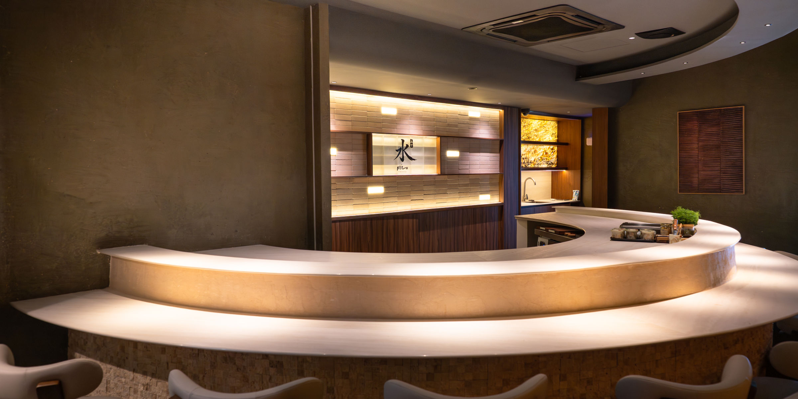

Jaya One · Petaling Jaya
Est. 2026 · Counter of Twelve
Where tradition
meets the fluid
art of sushi.
A twenty-seat restaurant in Jaya One, where our Head Chef guides a seasonal omakase journey — crafted with care, balance, and unwavering intention.
Scroll
01 / 04